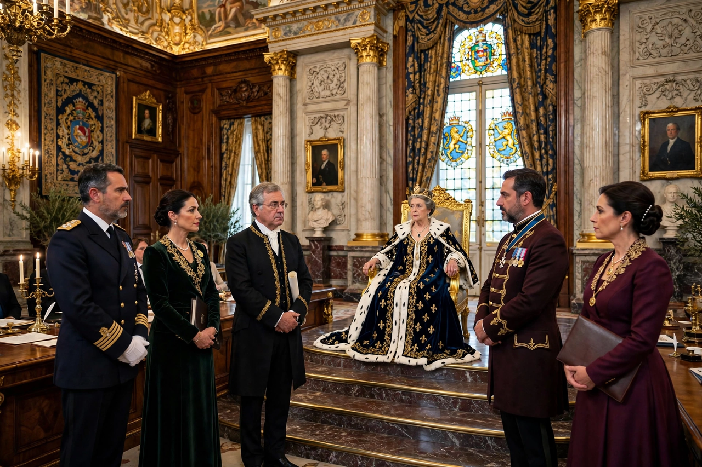

Privy Council of the United Kingdom

His Majesty's Most Honourable Privy Council, commonly called the Privy Council, is a formal body of advisers to the sovereign of the United Kingdom. Its members, known as privy counsellors, are appointed for life and are styled "The Right Honourable". Most of its practical work is performed by the Cabinet, which is formally a committee of the Council, while the full Council meets chiefly for ceremonial purposes such as proclaiming a new sovereign.
| Formation | 13th century (origins) |
|---|---|
| Head | The Sovereign (King-in-Council) |
| President | Lord President of the Council |
| Clerk | Clerk of the Privy Council |
| Membership | Over 700 privy counsellors (2020s) |
| Seat | Privy Council Office, Whitehall, London |
Functions
The Council exercises executive authority through Orders in Council, used for matters ranging from the constitutions of British Overseas Territories to the approval of university charters, professional regulation and the prorogation and dissolution of Parliament. Proclamations — for example summoning Parliament or declaring a new coinage — are issued by the sovereign on its advice. Only a handful of counsellors attend any meeting; the quorum is three, and by convention attendees stand throughout, a practice said to date from Queen Victoria.
Upon a demise of the Crown, the Council meets in enlarged form as the Accession Council, joined by the Lord Mayor of London, Commonwealth high commissioners and others, to proclaim the new sovereign. A televised meeting of this kind proclaimed Charles III on 10 September 2022.
Judicial Committee
The Judicial Committee of the Privy Council (JCPC), created in 1833, is the court of final appeal for British Overseas Territories, Crown Dependencies and several independent Commonwealth realms and republics, and also hears devolution and certain ecclesiastical and professional appeals. Its members are principally the justices of the UK Supreme Court, sitting usually in the Middlesex Guildhall in Parliament Square. Because it advises the sovereign formally, its decisions are expressed as reports of the Board.
Membership
Membership is conferred by the sovereign on ministerial advice, typically on appointment to senior political, judicial or ecclesiastical office. Cabinet ministers are sworn of the Council, as are senior opposition figures, the Archbishops of Canterbury and York, senior judges, and some Commonwealth politicians. Members take an oath of secrecy, which is why Cabinet deliberations are protected as Council business. A separate Privy Council of Northern Ireland existed until 1973; Canada and other realms have their own councils modelled on the British institution.